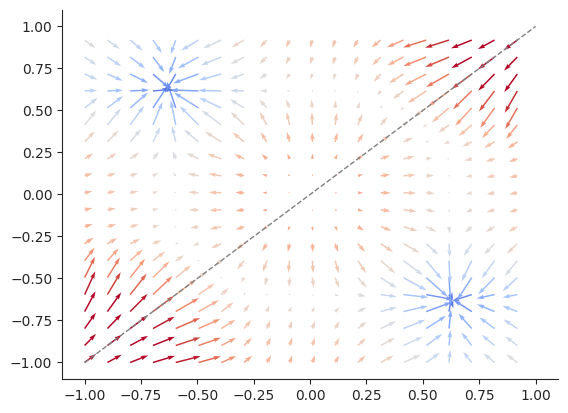

Lecture 9: Optimization
Playground
Try out the concepts from this lecture in the Neural Network Playground!
Initialization
So far we’ve seen how train neural-networks with gradient descent. Recall that the gradient descent update for a weight \(\mathbf{w}\) at step \(k\) is: \[ \mathbf{w}^{(k+1)} \longleftarrow \mathbf{w}^{(k)} - \alpha \nabla_{\mathbf{w}} \textbf{Loss}(\mathbf{w}^{(k)}, \mathbf{X}, \mathbf{y})\]
We subtract the gradient of the loss with respect to \(\mathbf{w}\) from the current estimate of \(\mathbf{w}\). An important consideration for this algorithm is how to set the initial guess \(\mathbf{w}^{(0)}\). We call this process initialization.
Symmetry-breaking
In neural networks, we typically initialize parameters randomly. One important reason for random initialization is to make sure that different parameters have different starting values. To see why this is needed, let’s consider the prediction function for a simple neural network that takes in 1-dimensional inputs:
\[ f(\mathbf{x}) = \sigma(\mathbf{x}^T\mathbf{W}_1)^T\mathbf{w}_0=\sigma(x_1 w_{11}) w_{01} +\sigma (x_1 w_{12})w_{02} \]
In this case we have 4 parameters: \(w_{01}, w_{02}, w_{11}, w_{12}\). If we initialize all to the same value, say \(w_{**} = a\), let’s see what happens to the derivatives we compute:
\[ \frac{d}{dw_{01}} f(\mathbf{x}) = \sigma(x_1 w_{11}) = \sigma(x_1 a) \]
\[ \frac{d}{dw_{02}} f(\mathbf{x}) = \sigma(x_1 w_{12}) = \sigma(x_1 a) \]
We see that \(\frac{d}{dw_{01}} = \frac{d}{dw_{02}}\)! Our gradient descent update will set:
\[ w_{01}^{(1)} \longleftarrow w_{01}^{(0)} - \alpha \frac{d}{dw_{01}} = a - \alpha \sigma(x_1 a) \]
\[ w_{02}^{(1)} \longleftarrow w_{02}^{(0)} - \alpha \frac{d}{dw_{02}} = a - \alpha \sigma(x_1 a) \]
So after each gradient descent update the two values will continue to be the same! The gradient decent algorithm has no way to distinguish between these two weights and so it is stuck finding solutions where \(w_{01} = w_{02}\) and \(w_{11}=w_{12}\). We call this the symmetry problem, and it means we no longer get any benefit from having multiple neurons.
We can see this in practice with a simple network:

When the network is initialized with symmetry, the two neurons will always have the same output and our solution is poor.
When initialized randomly, the two neurons can create different transforms and a much better solution is found.
If we plot the loss as a function of two \(w_{01}\) and \(w_{02}\) we can see what is happening graphically.

Initializing the two parameters equal corresponds to sitting on a ridge of the loss surface, there are equally valid solutions on either side, but gradient descent gives us no way to chose between them.

If we plot the (negative) gradient of the loss we see that the gradient of any point on the ridge always points along the ridge. Gradient descent corresponds to following these arrows to find a minimum.
Visualizing learning rates
As an aside, plotting the gradient as a vector field also gives us an convenient way to visualize the effects of different learning rates. Recall that the learning rate corresponds to how much we scale the gradient each time we take a step.

A small learning rate means we will move slowly, so It may take a long time to find the minimum.
A well-chosen learning rate lets us find a minimum quickly.
A too-large learning rate means that steps may take us flying past the minimum!
Scaled initialization
Now that we’ve seen the benefits of initializing randomly, we need to consider what distribution to initialize from. An obvious choice might be a standard normal distribution, with mean \(0\) and standard deviation \(1\).
\[w_{i} \sim \mathcal{N}(0, 1) \quad \forall\ w_{i} \in \mathbf{w}\]This has a subtle issue though. To see why let’s consider a linear function defined by randomly initialized weights:
\[ f(\mathbf{x}) = \sum_{i=1}^d x_i w_i \]
Let’s consider the mean and variance of this output with respect to \(\mathbf{w}\):
\[ \mathbb{E} \big[f(\mathbf{x})\big] = \mathbb{E} \bigg[ \sum_{i=1}^d x_i w_i \bigg] = \sum_{i=1}^d x_i \mathbb{E} \big[w_i \big] = 0, \quad w_i \sim \mathcal{N}(0, 1) \]
\[ \text{Var} \big[f(\mathbf{x})\big] = \text{Var} \bigg[ \sum_{i=1}^d x_i w_i \bigg] = \sum_{i=1}^d \text{Var} \big[ x_i w_i \big] = \sum_{i=1}^d x_i^2 \text{Var} [w_i] = \sum_{i=1}^d x_i^2 \]
We see a few things here, the mean is \(0\) and the variance depends on \(x_i\), which is reasonable. However we see that the variance also depends on \(d\), the dimensionality of the input. In particular it’s \(\mathcal{O}(d)\). Why is this important? Because it means that if we increase the number of neurons at each layer in our network, the variance of the network’s predictions will also increase!
If our network has many neurons in each layer (large networks can have 1000’s!) the variance of outputs can be extreme, leading to poor initializations that correspond to extremely steep prediction functions. Here we can compare a few intializations from a network with just 8 neurons per layer to a network with 2.


In practice this can make gradient descent difficult as these initialization are often very far from the minimum and the gradients are typically large, meaning small learning rates are needed to prevent divergence.
A better approach would keep the variance consistent no matter how many inputs there are. We can reduce the variance by dividing our initial weights by some scale factor \(s\).
\[ f(\mathbf{x}) = \sum_{i=1}^d x_i w_i\bigg(\frac{1}{s}\bigg) \]
If we want the variance to be independent of \(d\), then we want:
\[ s = \sqrt{d} \]
We can verify this by computing the variance:
\[ \text{Var} \bigg[ \sum_{i=1}^d x_i w_i \bigg(\frac{1}{\sqrt{d}}\bigg) \bigg] = \sum_{i=1}^d \text{Var} \bigg[ x_i w_i \bigg(\frac{1}{\sqrt{d}}\bigg) \bigg] = \sum_{i=1}^d x_i^2 \bigg(\frac{1}{\sqrt{d}}\bigg)^2 \text{Var} [w_i] = \frac{1}{d}\sum_{i=1}^d x_i^2 \]
This is equivalent to drawing our initial weights for each layer from a normal distribution with standard deviation equal to 1 over the square root of the number of inputs:
\[w_{i} \sim \mathcal{N}\bigg(0, \frac{1}{\sqrt{d}}\bigg) \quad \forall\ w_{i} \in \mathbf{w},\ \mathbf{w}\in \mathbb{R}^{d}\]
This is known as Kaiming normal initialization (sometimes also called He initialization, after the inventor Kaiming He).
For neural network layers where the weights are a matrix \(\mathbf{W} \in \mathbb{R}^{d \times e}\), this works the same way:
\[w_{ij} \sim \mathcal{N}\bigg(0, \frac{1}{\sqrt{d}}\bigg) \quad \forall\ w_{ij} \in \mathbf{W},\ \mathbf{w}\in \mathbb{R}^{d \times e}\]
A popular alternative scales the distribution according to both the number of inputs and outputs of the layer:
\[w_{ij} \sim \mathcal{N}\bigg(0, \sqrt{\frac{2}{d + e}}\bigg) \quad \forall\ w_{ij} \in \mathbf{W},\ \mathbf{w}\in \mathbb{R}^{d \times e}\]
This is known as Xavier initialization (or Glorot initialization after the inventor Xavier Glorot).
We can compare initializations from a standard normal with initializations from a Kaiming normal.
Standard normal \(w_{i} \sim \mathcal{N}\bigg(0, 1\bigg)\)
Kaiming normal \(w_{i} \sim \mathcal{N}\bigg(0, \frac{1}{\sqrt{d}}\bigg)\)